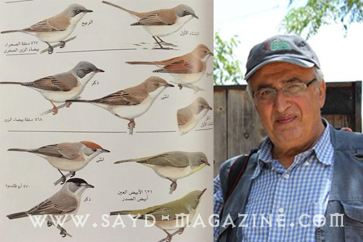

يسعدني أن أبدي بالرأي العلمي المجرد وغير المنحاز لأي فئة من الناس، على شكل مشورة تبين ما هو في صالح الصياد المسؤول وصالح الطائر على أرض البلاد. مشورة علمية فيها سمعة جيدة للوطن وإحترام في الخارج وتهتم بالتوازن البشري - الطيري في الداخل. أما الرأي القانوني فسأبنيه على خبرتي من جراء تكليفي وتنفيذي وضع قانون الصيد البري في العام 1996 من قبل وزارة البيئة. إنني أحترم الصيد المسؤول وأنا معه، وأحترم الإنسان قبل كل شئ وأحترم الطائر الذي لولاه لخسر المزارعون نصف محصولهم. ففي أوروبا وأمريكا لا يسمح لأحد بإنشاء مزرعة أو بستان أو حقل حبوب أو خضروات إذا لم يؤمن بيئة تجلب الطائر كإحاطة الحقل بأشجار تصد الرياح وتؤمن مكاناً لأعشاش الطيور، وتأمين مساحات حيادية بين المزروعات تنبت فيها الحشائش والشجيرات كرمى لعيون الطيور. وهنالك الكثير من الشروط المفروضة على المزارعين والتي تهدف إلى زيادة التنوع البيولوجي في الأراضي الزراعية. وفيما يلي نرى على سبيل المثال كيف يجب أن تكون المزارع الصديقة للطيور. صحيح أن الطيور تلعب دوراً كبيراً في القضاء على آفات الحقول والغابات والأحراج وتخلص المحاصيل الزراعية من الأوبئة وتساهم في تلقيح النباتات، إلا أنها كذلك تستخدم للحومها ولكن بشكل محدود ومدروس، لا يلحق الضرر بالنوع ولا يتسبب بانقراضه ولا يزعزع توازن أو إستدامة التراث الطبيعي. من هذا المنطلق، سأوضح النقاط التالية كوني مواطناً يتوجب عليه تقديم المشورة العلمية وكوني مسؤولاً على لائحة خبراء الطيور الدوليين أمام المنظمات الدولية للمحافظة على الطيور: أولاً: إن الأسباب الموجبة لقانون الصيد البري اللبناني والمادة الرابعة منه أشارت إلى حماية الأنواع المهددة بخطر الإنقراض على المستوى العالمي. إن لبنان وقع وصادق على الإتفاقيات الدولية التي تحمي الطيور الموضوعة على اللائحة الحمراء، خاصة إتفاقية "التنوع البيولوجي" CBD ، وإتفاقية "إيوا" AEWA للطيور المهاجرة الأوراسية – الأفريقية، وإتفاقية ومذكرة تفاهم "حماية الطيور الجارحة" Raptors MOE وإتفاقية التجارة بأنواع الطيور المهددة بالإنقراض CITES، وإتفاقية الأنواع المهاجرة CMC. ولما أصبح طائر الترغل مهدداً عالمياً بالإنقراض في العام 2015، أرسل المجلس الوطني للبحوث العلمية كتاباً إلى المجلس الأعلى للصيد البري متمنياً فيه إزالة طائر الترغل من على لائحة الطيور الطرائد المسموح صيدها ، وهكذا كان وأصبح الترغل محمياً لبنانيا بداية من شهر آذار 2016، وتلقى لبنان تهنئة المجتمع الدولي على هذه المبادرة. إن هذا الطائر مهدد بنسبة عالية (Vulnerable) ولا يسمح بصيده بموجب الإتفاقيات المذكورة أعلاه، ولا تجوز إعادته إلى مجموعة الطيور المسموح صيدها بل العكس صحيح حسب قانون الصيد اللبناني الذي يقول: "يتخذ وزير الوصاية القرارات اللازمة، بمنع، بصورة مؤقتة أو دائمة، صيد كل طير أو حيوان يظهر أنه مفيد للزراعة أو للتوازن البيئي أو لغاية تكثير نوعه لقلة أعداده محلياً أو لإندراجه على لوائح الطيور والحيوانات المهددة بالإنقراض عالمياً والواردة في الإنفاقيات الدولية المبرمة مع لبنان وتلك الواردة في الكتاب الأحمر للإتحاد الدولي (IUCN)، ويعين المناطق والفترات الممنوع فيها الصيد خلال السنة، وذلك بناء على إقتراح المجلس" (الفقرة ب من المادة الرابعة من القانون 580/4). ثانياً: إن المادة الثالثة إشترطت مراعاة استدامة التراث الطبيعي كأساس لتحديد فترة موسم الصيد. تقول المادة الثالثة: “يحدد وزير البيئة تاريخ افتتاح وانتهاء موسم الصيد والأوقات التي يسمح بالصيد خلالها وذلك بناء على اقتراح المجلس، على أن يراعى تطبيق مبدأ استدامة التراث الطبيعي المنصوص عليه في الإتفاقيات الدولية المبرمة بحيث يمنع الصيد في موسم تكاثر الحيوانات والطيور، وفي أثناء عبورها نحو أماكن تكاثرها وأثناء رعايتها لصغارها”. وهذا المنع في موسم التكاثر منصوص عنه أيضاً في الإرشاد الأوروبي للطيور، لا سيما الملحق 2، وفي البرامج الدولية لحماية الطيور والتي تمنع صيد الطيور أثناء ضعفها ووهنها (أي في موسم التكاثر). وفي لبنان يبدأ هذا الموسم في شباط مع تزاوج ووضع بيض العديد من الطيور كأنواع البوم التي تتغذى على الفئران وأنواع العصافير المغردة الصغيرة التي تتغذى على الحشرات كالبوبانة وسن المنجل والهازجة الشاحبة والنمنمة والدخلة الشائعة. إنها طيور تبدأ بالتزاوج قبل إنتهاء فصل الإشتاء الذي يمتد من كانون الأول حتى شباط، أما إنتهاء موسم التكاثر فيكون مع إنتهاء رعاية الصغار في بدايات شهر أيلول وذلك في لبنان وسائر بلدان حوض المتوسط. لذلك لا يجوز السماح بصيد الطيور من أول شباط حتى أول أيلول على أقل تقدير تطبيقاً لمبدأ استدامة التراث الطبيعي. وأعتقد أن هذا المبدأ معمول به في قرارات الصيد حتى الآن. ثالثاً: صيد التيان في لبنان 32 نوعاً من التيان، منها ما هو نادر ومنها ما هو متوفر، ولكنها جميعها تتغذى على الحشرات. فما هو الطير المسموح صيده من بينها. وهل يستطيع الصياد التمييز بين التيان أبو قلنسوة والتيان السرديني والتيان الإعتيادي والتيان أبيض الزور والتيان الأصغر أبيض الزور والتيان الرمادي الأسود الرأس؟ إن التيان في لبنان مفرخ ومقيم وفي شهر آب يكون لا يزال يطعم صغاره. ومن نوع التيان مجموعات مهاجرة تصل في أيلول. لذا فإن فتح الصيد في آب لصيد التيان سيؤدي إلى قتل الطيور المفرخة المقيمة. وقانون الصيد في مادته الرابعة، الفقرة ج.1 و ج.2 يقول: " يقترح المجلس على وزير الوصاية إتخاذ قرارات بخصوص: - الأوقات التي يسمح فيها بصيد الطيور والحيوانات العابرة للحدود". ولم يسمح القانون بصيد الطيور والحيوانات المقيمة (غير العابرة للحدود) وهذا يعني عدم قانونية فتح باب الصيد في آب أي قبل وصول الطيور المهاجرة. من ناحية ثانية، ونظراً لتشابه 32 نوعاً من التيان فإن التيان الذي يسمح بصيده سيعرض باقي الأنواع للخطر لأن الصياد لا يميز بعد بين التيان والتيان وما يشبه التيان. وأخيراً يبقى أن نقول أن صيد العصافير الصغيرة التي بحجم أصغر من السمن سيعرض 50% من طيور لبنان للإنقراض ومنها طبعاً ما هو مهدد بالإنقراض. فإختيار الطرائد في الصيد المسؤول يبنى على معايير هي أن يكون الطائر يغلب أكل الحبوب أو البذور، مكتنز اللحم، بحجم السمن وما فوق، غير مهدد عالمياً أو إقليمياً أو محلياً، وليس من أكلة الحشرات أو اللحوم، وليس مفيداً للزراعة والتوازن البيئي، ومتوفر بأعداد كبيرة. والجدير بذكره أن فصيلة أنواع التيان هي من أكلة الحشرات ولكنها تتغذى على الفاكهة في أواخر فصل التفريخ من أجل إكتساب الدهون التي تعطيها الطاقة لأيام الخريف أو خلال الهجرة عند القسم المهاجر منها. لا شك أن السماح بصيد التيان سيؤدي إلى إصطياد أنواع أخرى. فالقانون يقول: "فيما خلا الطرائد التي تحدد وفقاً للفقرة السابقة، تعتبر جميع الطيور والحيوانات البرية المقيمة والمهاجرة محمية على مدار السنة ويحظر صيدها". وهذا يعني أن إقحام طائر التيان الذي يتغذى على الحشرات ومفيد للزراعة ومحمي بموجب المادة 4، الفقرة ب، هو أمر يصعب على المخولين تطبيق القانون والقيام بدورهم بل أنه أمر يجعل من التطبيق أمراً مستحيلاً، وذلك بسبب تشابه الأنواع، إذ يصعب حتى على مراقبي الطيور التمييز بين التيان الرمادي الزيتي وتيان الأحراج وبين تيان أبو قلنسوة وتيان أورفيوس. مع خالص التحية د. غسان رمضان الجرادي أخصائي علم الطيور وبيئتها
من كل وادي خبر
تزوير أوراق الجوارح أمام القضاء في إسبانيا… وتونس تستضيف لقاءً لمكافحة الاتجار غير المشروع بالطيورعكار: باشق داخل حقيبة ظهر خلال عملية لمكافحة صيد الجوارحتحذير أوروبي: 11–36 مليون طائر سنويًا في المتوسط و83% من الدول لم تعتمد التدابير الكافيةأين تستريح الطيور؟ «صيد» تستعرض أبرز ملاذات الهجرة في المشرق والجزيرة العربية.موسم الطوقي 2026–2027 يسلّط الضوء على حياة محمية الملك عبدالعزيز البريةالبقاع الشمالي: إزالة شباك الصيد غير القانونية ترفع حصيلة الحملة إلى 38,280 م²حين يتغيّر الساحل… أين تستريح الطيور؟قطر تستهدف حماية 30% من مناطقها البرية والبحرية بحلول 2030الملواح يختتم منافساته بتتويج 60 فائزًاحين يصبح الخريف موسماً لاصطياد الصورةرادار صيد العربي | سبتمبر 2026: توقيف 50 صيادًا وإنقاذ آلاف الطيورمن سفوح الأطلس إلى سواحل البحر الأحمر... موسم الصيد العربي يدخل خريف 2026من صقلية إلى لبنان: معركة إنقاذ الطيور المهاجرة من الصيد الجائرسماء الكوكب تفقد توازنها: تقرير «بيرد لايف» يدق ناقوس الخطر حول مسارات الهجرة العالميةكيف فقدت مسارات الهجرة 7 من طيورها خلال 150 عاماً؟دمار بيئي واسع في جنوب لبنان يهدد أحد أهم ممرات هجرة الطيور في العالم
تزوير أوراق الجوارح أمام القضاء في إسبانيا… وتونس تستضيف لقاءً لمكافحة الاتجار غير المشروع بالطيورعكار: باشق داخل حقيبة ظهر خلال عملية لمكافحة صيد الجوارحتحذير أوروبي: 11–36 مليون طائر سنويًا في المتوسط و83% من الدول لم تعتمد التدابير الكافيةأين تستريح الطيور؟ «صيد» تستعرض أبرز ملاذات الهجرة في المشرق والجزيرة العربية.موسم الطوقي 2026–2027 يسلّط الضوء على حياة محمية الملك عبدالعزيز البريةالبقاع الشمالي: إزالة شباك الصيد غير القانونية ترفع حصيلة الحملة إلى 38,280 م²حين يتغيّر الساحل… أين تستريح الطيور؟قطر تستهدف حماية 30% من مناطقها البرية والبحرية بحلول 2030الملواح يختتم منافساته بتتويج 60 فائزًاحين يصبح الخريف موسماً لاصطياد الصورةرادار صيد العربي | سبتمبر 2026: توقيف 50 صيادًا وإنقاذ آلاف الطيورمن سفوح الأطلس إلى سواحل البحر الأحمر... موسم الصيد العربي يدخل خريف 2026من صقلية إلى لبنان: معركة إنقاذ الطيور المهاجرة من الصيد الجائرسماء الكوكب تفقد توازنها: تقرير «بيرد لايف» يدق ناقوس الخطر حول مسارات الهجرة العالميةكيف فقدت مسارات الهجرة 7 من طيورها خلال 150 عاماً؟دمار بيئي واسع في جنوب لبنان يهدد أحد أهم ممرات هجرة الطيور في العالم